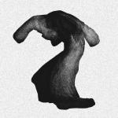
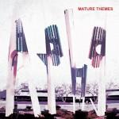
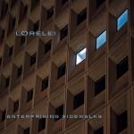

Music Reviews
-

Teengirl Fantasy Tracer
On their sophomore album, Teengirl Fantasy ditch he R&B samples for a fully analog mix of EDM and IDM that feels fully layered and organic, yet lacks the personality to make it fully human.
Peter Quinton puts down his favorite Tiger Beat issues in order to review the latest from Teengirl Fantasy -
Young Moon Navigated Like The Swan
Trevor Montgomery returns under the new guise of Young Moon with an album dense with profound realisations that translate into palpable misery. But Navigated Like The Swan offers something else despite this admittance.
Matthew Bevington tries to figure things out... -

Divine Fits A Thing Called Divine Fits
The fine young cannibals of indie rock take from their individual projects and cobble up a sharp, sparse pop effort with a hefty dose of bounce.
Juan Edgardo Rodríguez rocks his shades... -
thenewno2 thefearofmissingout
thenewno2's sophomore record is the sound of a band finding both its identity and the confidence to stretch out of any boxes built around them.
Joe Marvilli makes sure he doesn't miss out.... -

Yeasayer Fragrant World
The Brooklyn-based "Middle Eastern-psych-snap-gospel" act are back with their third album. Does its bizarre title suggest that they're now offering olfactory delights to go along with the usual auditory ones?
Mark Davison is disappointed to find that they even struggle with the latter... -
Azealia Banks Fantasea
Whether you loved her EP earlier this year and can't wait for her proper debut or you never even got on board with 212, Azealia Banks has put together a mixtape that demands your attention.
Forrest Cardamenis dives into a... -

Ariel Pink's Haunted Graffiti Mature Themes
Catapulted into the wider public consciousness with 2010's sensational Before Today, Ariel Pink is back and this time he wants to talk about mature themes.
David Coleman is ready to get serious... -

Jessie Ware Devotion
The SBTRKT collaborator releases her highly-anticipated debut album. However, it might not be quite what you think.
Joe Rivers gets his genres in a twist... -

Lorelei Enterprising Sidewalks
Coming back after an 18 year absence, Slumberland royalty Lorelei dial up the post-rock and show their newer label mates that it's not all about shimmering guitars and twee aspirations.
Joshua Pickard reviews... -

R. Stevie Moore Lo-Fi High Fives... A Kind Of Best Of...
R. Stevie Moore is one of the most fascinating, productive musicians of the DIY music scene. While most would struggle to eke out a minor pop tune onto a four-track Tascam unit over a week’s time, fully realized compositions seem to ooze out of Moore’s every pore and solidify into vinyl discs on the ground below him...
Andrew Ciraulo wanders through tape-hiss and fuzz to review....